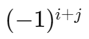
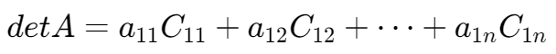
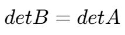
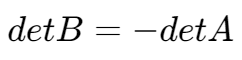
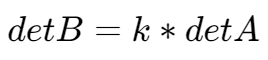
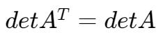
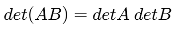
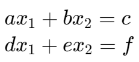
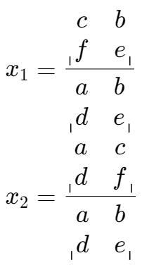

行列式 | Determinants
余子式,,和代数余子式,,
对于第 i 行第 j 列的余子式即将行列式去掉第 i 行和第 j 列后剩下元素组成的新行列式。
对于第 i 行第 j 列的代数余子式即其余子式乘上系数 。
行列式展开
一个行列式对其某一行或某一列展开即将该行所有元素乘上其代数余子式的和。
例如，行列式 A 对于其第一行的展开表示为：

行列式基本操作
设 A 为原矩阵，B 为操作后产生的矩阵。
| 操作描述 | 操作结果 |
|---|---|
| 一行加到另一行 |  |
| 两行交换 |  |
| 一行乘上常数 k |  |
| 转置 |  |
| 矩阵乘法 |  |
克莱姆法则 | Cramer's Rules
对于一个方程组

有解
